Mikrocomputertechnik 1
Einheit 1: Einleitung und Grundlagen
Einleitung und Grundlagen
Was Sie nach dieser Einheit können sollen
- Eine Zahl als Binär- und Hexadezimalmuster darstellen
- Dasselbe Muster vorzeichenlos und als Zweierkomplement lesen
- Bytes eines Datenworts auf Adressen verteilen
- Eine Auswahl und eine Addition mit Logik erklären
- Eine Registerübernahme mit Flanke und Schreibfreigabe vorhersagen
Einordnung in das Modul
| Einheiten | Schwerpunkt |
|---|---|
| 1 | Darstellung, Logik, Register und Speicher |
| 2–4 | Maschinenbefehle, Speicherzugriff, Funktionen |
| 5–7 | Datenpfad, Steuerwerk und Pipeline |
| 8–9 | Ein-/Ausgabe und Verbindung zu C |
Geplant sind neun Einheiten zu jeweils vier Unterrichtseinheiten.
Literatur und Werkzeuge
Sarah L. Harris, David Money Harris:
Digital Design and Computer Architecture — RISC-V Edition
- Vertiefung: Patterson / Hennessy, Computer Organization and Design
- Venus: Maschinenbefehle und Registerwerte
- Ripes: visueller Datenpfad und Prozessormodelle
- Werkzeugkette: Quelltext übersetzen und Programme verbinden
Unser Modell ausdrücklich festlegen
- RISC-V-Basis RV32I: 32-Bit-Ganzzahlregister
- Ein Byte: acht Bit; ein RISC-V-Word: 32 Bit
- Kursumgebung: byteadressierter Speicher, Little Endian
- Registermodell: Übernahme an der steigenden Flanke
- Beispiele mit vier oder acht Bit sind verkleinerte Rechenmodelle
1. Modelle und Schnittstellen
Eine Rechnung als Schnittstelle
\[A=5,\qquad B=3,\qquad Y=A+B=8\]
| Sicht | Was wird beschrieben? |
|---|---|
| Verhalten | Ergebnis für benannte Eingaben |
| Umsetzung | Bausteine, die das Ergebnis erzeugen |
| Speicherung | Wann und wo das Ergebnis erhalten bleibt |
Abstraktion: Der Vertrag bleibt sichtbar
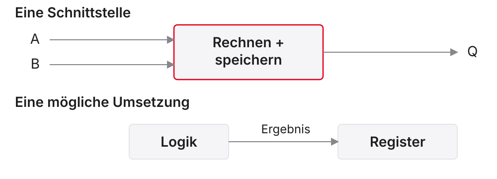
Details ausblenden, Voraussetzungen und Wirkung erhalten.
Befehlssatz und Umsetzung unterscheiden
- ISA: Wirkung, die ein Maschinenbefehl zusichert
- Mikroarchitektur: konkrete Umsetzung dieser Wirkung
- Derselbe Befehlssatz kann verschiedene Datenpfade haben
- Positive Registerflanke: Eigenschaft unseres Lehrmodells
2. Bits und Zahlendarstellung
Vom physikalischen Signal zum logischen Bit
- Das digitale Modell verwendet die Werte 0 und 1
- Ein Bauteil ordnet zulässige Pegelbereiche diesen Werten zu
- Ein hoher Pegel ist ein Bereich, keine universelle Spannung
- Rechnen mit Bits abstrahiert die physikalische Umsetzung
Bit, Nibble, Byte und Word
| Gruppe | Breite | Hexziffern |
|---|---|---|
| Bit | 1 | – |
| Nibble | 4 Bit | 1 |
| Byte | 8 Bit | 2 |
| RISC-V-Word | 32 Bit | 8 |
Ein Register unserer RV32I-Kursmaschine hält ein Word.
Binär: Jede Position hat ein Gewicht
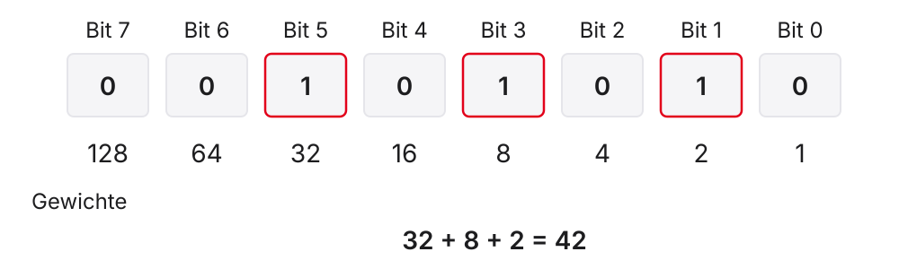
\[N=\sum_{i=0}^{n-1} b_i\,2^i\]
Hexadezimal verkürzt die Schreibweise
\[16=2^4\]
| Hexziffer | Binärgruppe | Dezimalwert |
|---|---|---|
| 0 | 0000 |
0 |
| 5 | 0101 |
5 |
| A | 1010 |
10 |
| F | 1111 |
15 |
Eine Hexziffer beschreibt genau vier Bit.
Umrechnen: Gruppen in derselben Reihenfolge
\[42_{10}=0010\,1010_2=\mathtt{0x2A}\]
Aufgabe: Welcher Hexwert entsteht, und wie viele Bit sind gezeigt?
Ein Muster, mehrere Bedeutungen
Das 8-Bit-Muster 0100 0001:
| Interpretation | Bedeutung |
|---|---|
| Vorzeichenlose Zahl | 65 |
| ASCII-Zeichencodierung | Zeichen A |
| Maschinenbefehl | Nur mit passendem Format und gültiger Codierung |
Der Kontext legt die Interpretation fest.
3. Negative Zahlen und feste Breite
Eine Alternative: Vorzeichen und Betrag
4-Bit-Sign-Magnitude: erstes Bit Vorzeichen, drei Bits Betrag.
| Muster | Wert |
|---|---|
0101 |
\(+5\) |
1101 |
\(-5\) |
0000 |
\(0\) |
1000 |
\(0\) |
Zwei Muster können denselben Zahlenwert darstellen.
Zweierkomplement: Das höchste Bit zählt negativ
\[N=-b_{n-1}\,2^{n-1}+\sum_{i=0}^{n-2} b_i\,2^i\]
Für acht Bit:
\[1111\,1011_2=-128+64+32+16+8+2+1=-5\]
Vorzeichenlos bedeutet dasselbe Muster 251.
Aus plus fünf wird minus fünf
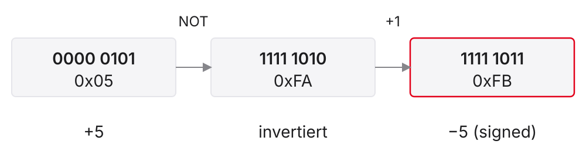
Breite festlegen → alle Bits invertieren → eins addieren.
Die Grenze: Der kleinste Wert hat kein positives Gegenstück
Acht-Bit-Zweierkomplement:
\[-128\leq N\leq127\]
Modulare Negation liefert wieder dasselbe Muster.
Übertrag und vorzeichenbehafteter Überlauf
Acht Bit bleiben gespeichert.
| Rechnung | Ergebnisbits | Übertrag | Signed-Überlauf |
|---|---|---|---|
0x7F + 1 |
0x80 |
0 | Ja: \(127+1\) |
0xFF + 1 |
0x00 |
1 | Nein: \(-1+1\) |
Übertrag und Signed-Überlauf sind verschiedene Aussagen.
Breiter speichern: Vorzeichen oder Nullen erweitern
| 8-Bit-Muster | Erweiterung auf 32 Bit | Erhaltener Wert |
|---|---|---|
0xFB |
0xFFFFFFFB |
\(-5\), Zweierkomplement |
0xFB |
0x000000FB |
\(251\), vorzeichenlos |
Die Interpretation bestimmt die passende Erweiterung.
Kurzaufgabe: 85 und minus 85
- Stellen Sie 85 mit acht Bit und zwei Hexziffern dar.
- Bilden Sie das Acht-Bit-Zweierkomplement von \(-85\).
- Welchen vorzeichenlosen Wert hat dessen Muster?
Prüfen Sie zuerst, ob beide vorzeichenbehafteten Werte darstellbar sind.
4. Bytes und Adressen
Adresse und Inhalt sind verschiedene Größen
| Adresse | Beispielinhalt eines Bytes |
|---|---|
0x1000 |
0x78 |
0x1001 |
0x56 |
0x1002 |
0x34 |
0x1003 |
0x12 |
Eine Adresse weiter → ein Byte weiter.
Adressraum ist keine Aussage über eingebauten Speicher
\[2^{32}\text{ Byte}=4\text{ GiB}=4\,294\,967\,296\text{ Byte}\]
| Einheit | Anzahl Byte |
|---|---|
| kB | \(10^3\) |
| KiB | \(2^{10}\) |
| GB | \(10^9\) |
| GiB | \(2^{30}\) |
Ein Adresswert muss nicht zu eingebautem oder zugreifbarem RAM gehören.
Byteordnung eines 32-Bit-Werts
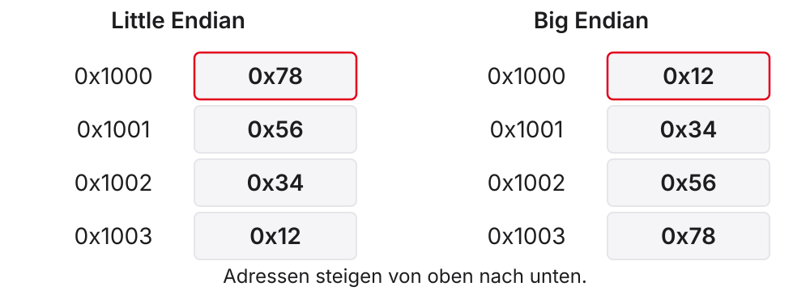
Little Endian: niederwertigstes Byte an der kleinsten Adresse.
Alignment: Eine andere Frage an die Adresse
Ein Word belegt vier Byte.
0x1000ist durch vier teilbar: natürlich ausgerichtet0x1001ist nicht durch vier teilbar: nicht natürlich ausgerichtet- Byteordnung: Welches Byte liegt wo?
- Ausrichtung: Passt die Startadresse zur Breite?
5. Kombinatorische Logik
Kombinatorisch bedeutet ohne gespeicherten Zustand
- Stabile Ausgänge hängen von den aktuellen Eingängen ab
- Eingangsänderungen wirken nach endlicher Laufzeit
- Gatter, Multiplexer und Addierer sind Beispiele
- Ein Takt ist für ihre reine Funktion nicht erforderlich
Laufzeit ist etwas anderes als Gedächtnis.
Grundgatter als logische Bausteine
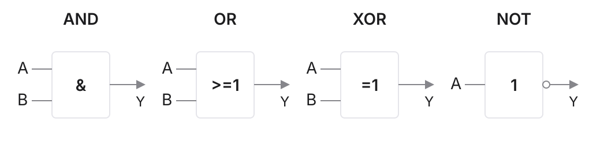
\[A\land B,\qquad A\lor B,\qquad A\oplus B,\qquad \overline{A}\]
Wahrheitstabelle der Zweieingangsfunktionen
| \(A\) | \(B\) | \(A\land B\) | \(A\lor B\) | \(A\oplus B\) |
|---|---|---|---|---|
| 0 | 0 | 0 | 0 | 0 |
| 0 | 1 | 0 | 1 | 1 |
| 1 | 0 | 0 | 1 | 1 |
| 1 | 1 | 1 | 1 | 0 |
\[\overline{0}=1,\qquad\overline{1}=0\]
Multiplexer: Eine von zwei Quellen auswählen
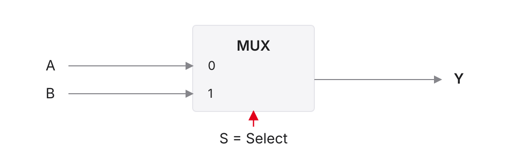
\[S=0:\ Y=A,\qquad S=1:\ Y=B\]
Die Auswahl als Gleichung
\[Y=(\overline{S}\land A)\lor(S\land B)\]
| \(S\) | Relevanter Eingang | Ergebnis |
|---|---|---|
| 0 | \(A\) | \(Y=A\) |
| 1 | \(B\) | \(Y=B\) |
Der ungewählte Eingang beeinflusst den stabilen Ausgang nicht.
Der Multiplexer aus Grundgattern
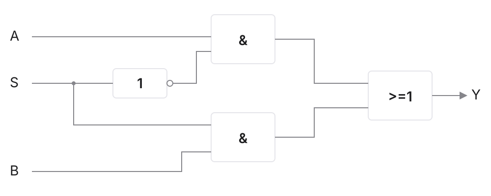
\[Y=(\overline{S}\land A)\lor(S\land B)\]
Vom einzelnen Bit zum ganzen Wort
- Ein Bus bündelt mehrere Datenleitungen
- 32-Bit-Auswahl: 32 Ein-Bit-Multiplexer parallel
- Alle erhalten denselben Auswahlwert \(S\)
- Ein gemeinsamer Auswahlwert ist keine Taktflanke
Beispiel: \(A=5\), \(B=10\). Auswahl 0 liefert 5, Auswahl 1 liefert 10.
6. Addition und Rechenwerk
Halbaddierer: Zwei Bits und zwei Ergebnisse
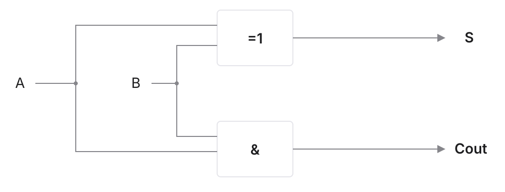
\[S=A\oplus B,\qquad C_{\mathrm{out}}=A\land B\]
Volladdierer: Den eingehenden Übertrag mitrechnen
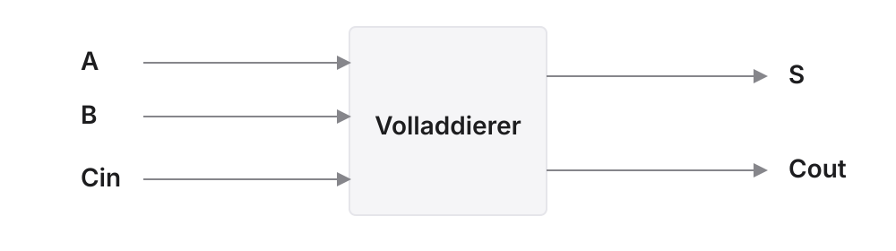
\[S=A\oplus B\oplus C_{\mathrm{in}}\] \[C_{\mathrm{out}}=(A\land B)\lor\bigl(C_{\mathrm{in}}\land(A\oplus B)\bigr)\]
Die acht Fälle des Volladdierers
| \(A\) | \(B\) | \(C_{\mathrm{in}}\) | \(S\) | \(C_{\mathrm{out}}\) |
|---|---|---|---|---|
| 0 | 0 | 0 | 0 | 0 |
| 0 | 0 | 1 | 1 | 0 |
| 0 | 1 | 0 | 1 | 0 |
| 0 | 1 | 1 | 0 | 1 |
| 1 | 0 | 0 | 1 | 0 |
| 1 | 0 | 1 | 0 | 1 |
| 1 | 1 | 0 | 0 | 1 |
| 1 | 1 | 1 | 1 | 1 |
Mehrere Stellen: Die Überträge verbinden
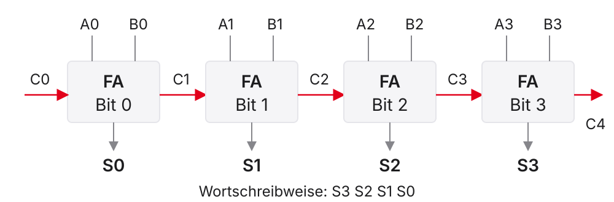
\[C_{i+1}\text{ wird zum eingehenden Übertrag der Stelle }i+1.\]
Papierrechnung: Sechs plus fünf
| Stelle von rechts | 0 | 1 | 2 | 3 |
|---|---|---|---|---|
| Eingehender Übertrag | 0 | 0 | 0 | 1 |
| Summenbit | 1 | 1 | 0 | 1 |
Subtraktion mit demselben Addierprinzip
Für \(n\) gespeicherte Bits:
\[A-B\equiv A+\overline{B}+1\pmod{2^n}\]
Die ALU verbindet mehrere Funktionen
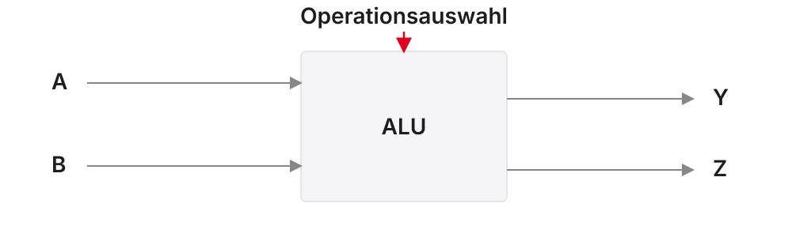
| Interner Beispielcode | Gewählte Funktion |
|---|---|
| 00 | Bitweises UND |
| 01 | Bitweises ODER |
| 10 | Addierpfad |
| 11 | Reserve |
Nullerkennung ist ein Signal des Rechenmodells
\[Z=\overline{Y_{31}\lor Y_{30}\lor\cdots\lor Y_0}\]
- Ergebnis vollständig null → \(Z=1\)
- Mindestens ein Ergebnisbit eins → \(Z=0\)
- Im RV32I-Ganzzahlmodell ist dies kein gespeichertes Statusflag
Vertiefung: Überträge schneller berechnen
\[G_i=A_i\land B_i,\qquad P_i=A_i\oplus B_i\] \[C_{i+1}=G_i\lor(P_i\land C_i)\]
- Generate: Übertrag selbst erzeugen
- Propagate: eingehenden Übertrag weiterreichen
- Andere Übertragsnetze verändern die Umsetzung, nicht die Addition
7. Zeit und gespeicherter Zustand
Kombinatorisch und sequenziell vergleichen
| Frage | Kombinatorisch | Sequenziell |
|---|---|---|
| Gespeicherter Zustand? | Nein | Ja |
| Ausgang abhängig von | Aktuellen Eingängen | Eingängen und Zustand |
| Beispiel | Multiplexer | Register |
| Takt zwingend? | Nein | Nicht allgemein |
Unser Registermodell ist flankengesteuert.
D-Flip-Flop: Ein Bit an einer Flanke übernehmen
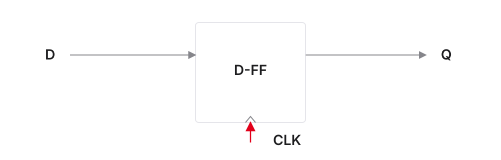
- \(D\): neuer Datenwert
- \(Q\): gespeicherter Wert
- Unser Modell: Übernahme bei der steigenden Flanke
Takt: Periode und Übernahmeereignis
\[f=\frac{1}{T}\]
Angenommene Periode \(T=10\,\mathrm{ns}\):
\[f=100\,\mathrm{MHz}\]
- Steigende Flanke: Übergang von 0 nach 1
- Hoher Pegel allein löst keine neue Übernahme aus
- Ein Takt ist keine allgemeine Zahl von Maschinenbefehlen
Setup und Hold: Daten um die Flanke stabil halten
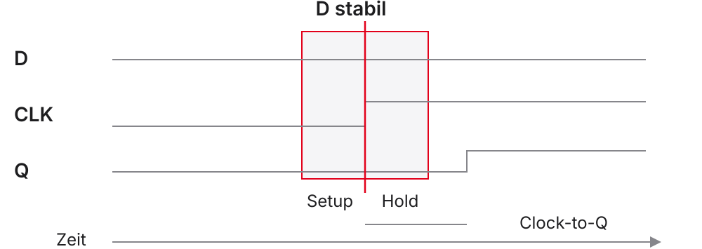
Setup vor der Flanke, Hold danach; Ausgang gültig nach Clock-to-Q.
Ein Register hält ein ganzes Wort
- Ein D-Flip-Flop speichert ein Bit
- 32 parallele Speicherbits bilden unser 32-Bit-Register
- Gemeinsames Taktsignal, eigener Datenwert je Bit
- Ausgangswort bleibt bis zur nächsten erlaubten Übernahme erhalten
Die Architektur legt die Breite fest, die Umsetzung kann variieren.
Schreibfreigabe: Übernehmen oder halten
An der aktiven Flanke:
\[Q^+=\begin{cases}D,&WE=1\\Q,&WE=0\end{cases}\]
- \(WE\): Write Enable, Schreibfreigabe
- Ohne aktive Flanke bleibt \(Q\) erhalten
- Der Takt läuft auch bei \(WE=0\) weiter
Schreibfreigabe mit einer Datenrückführung
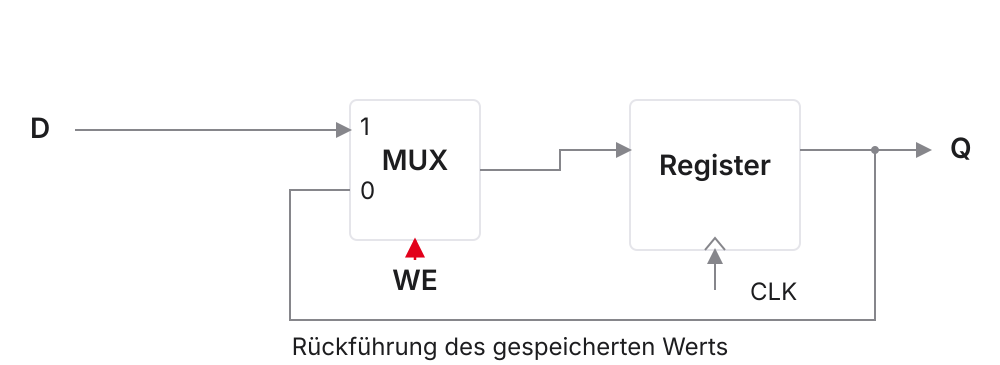
\(WE=0\) wählt den alten Wert; \(WE=1\) wählt neue Daten.
Zeitverlauf: Ein Wort gezielt übernehmen
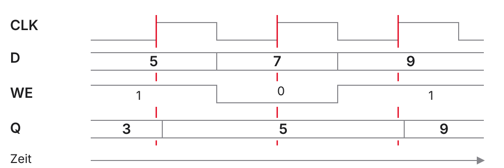
Anfangszustand \(Q=3\); alle Zeitbedingungen erfüllt.
Kurzaufgabe: Hoher Takt oder neue Flanke?
Anfang \(Q=0\), Zeitbedingungen erfüllt:
- Steigende Flanke mit \(D=1\), \(WE=0\)
- Bei hohem Takt wird \(WE=1\), noch keine neue Flanke
- Nächste steigende Flanke mit \(D=1\), \(WE=1\)
Welchen Wert hat \(Q\) nach jedem Schritt?
8. Registerbank und adressierter Speicher
Registerbank: Nummern wählen gespeicherte Werte
- Register File bedeutet Registerbank
- RV32I: 32 Architekturregister
x0bisx31 - Jedes hält einen 32-Bit-Wert
- Fünf Auswahlbits reichen: \(2^5=32\)
x5ist eine Registernummer, keine Speicheradresse
Lesen, rechnen und ein Ziel schreiben
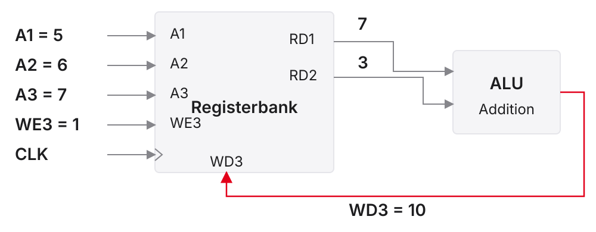
Lehrzustand: x5=7, x6=3, x7=0.
Die Nullregel von x0
- Lesen von
x0liefert stets null - Schreiben als Ziel verändert diesen Wert nicht
- Beispiel mit
x5=42:
Danach: x6=42, x5=42, x0=0.
Ein Additionsschritt verändert den gespeicherten Zustand
Lehrbefehl: add x7, x5, x6
| Register | Vorher | Nach gültiger Übernahme |
|---|---|---|
x5 |
7 | 7 |
x6 |
3 | 3 |
x7 |
0 | 10 |
Lesen → kombinatorisch addieren → Zielregister übernehmen.
Programme und Daten benötigen Speicherzugriffe
- Ein Programm besteht aus codierten Maschinenbefehlen
- Instruction Fetch: den nächsten Befehl holen
- Load: Daten aus Speicher in ein Register lesen
- Store: Daten aus einem Register in Speicher schreiben
- Eine Registeraddition benötigt keinen Daten-Store
Adressräume und Zugriffspfade unterscheiden
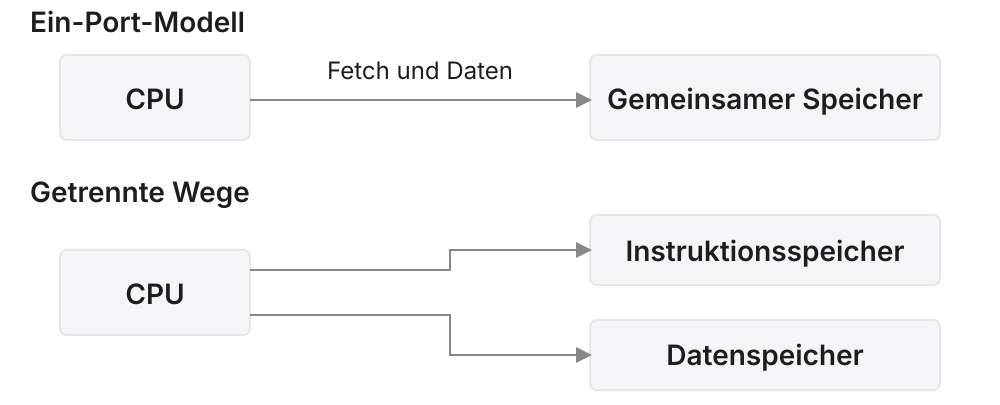
Gemeinsamer Adressraum allein erzwingt keinen gemeinsamen Port.
Ausblick auf die ersten Maschinenbefehle
Manuelles Lehrprogramm in beispiele/vl1_registeraddition.s:
Die Übung bietet einen optionalen Ripes-Versuch mit Sollwerten.
Das Fundament für Einheit 2
- Breite, Bitmuster und Zahlenwert unterscheiden
- Byteordnung und Adressausrichtung getrennt prüfen
- Mit Tabelle, Gleichung und Schaltbild dasselbe Verhalten erklären
- Rechenergebnis und Registerübernahme auseinanderhalten
- Registernummer und gespeicherten Inhalt benennen